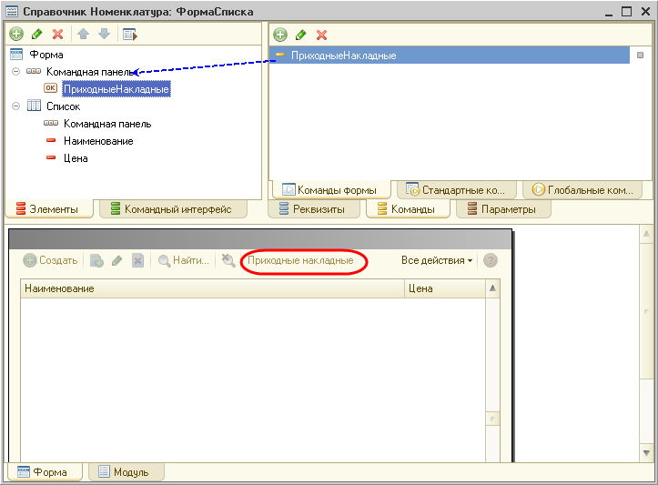
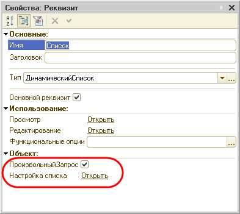

Как открыть форму списка с некоторым отбором?
Есть несколько способов для того, чтобы открыть форму списка с некоторым, заранее установленным отбором. Рассмотрим их по-порядку:
1. Первый способ заключается в том, что при открытии формы можно задать параметр формы Отбор, и открыть форму списка с этим параметром. Параметр Отбор представляет собой структуру. Имена элементов соответствуют именам полей, по которым производится отбор, а значения содержат значения отбора. Это параметр расширения управляемой формы динамического списка. То есть он существует у форм, основным реквизитом которых является реквизит типа Динамический Список, например у форм списка и форм выбора.
В процессе открытия формы будет установлен отбор по указанному полю. Например, в следующем примере открывается список приходных накладных с отбором по полю Номер, равному 333.
ЗначениеОтбора = Новый Структура("Номер", "333");
ПараметрыВыбора = Новый Структура("Отбор", ЗначениеОтбора);
ОткрытьФорму("Документ.ПриходнаяНакладная.ФормаСписка",ПараметрыВыбора);
2. Можно открыть форму списка без параметров:
ОткрытьФорму("Документ.ПриходнаяНакладная.ФормаСписка");
И затем, в обработчике события формы списка приходных накладных ПриСозданииНаСервере написать код, который создает отбор в динамическом списке, являющемся основным реквизитом формы:
&НаСервере
Процедура ПриСозданииНаСервере(Отказ, СтандартнаяОбработка)
ЭлементОтбора = Список.Отбор.Элементы.Добавить(Тип("ЭлементОтбораКомпоновкиДанных"));
ЭлементОтбора.ЛевоеЗначение = Новый ПолеКомпоновкиДанных("Номер");
ЭлементОтбора.ВидСравнения = ВидСравненияКомпоновкиДанных.Больше;
ЭлементОтбора.Использование = Истина;
ЭлементОтбора.РежимОтображения = РежимОтображенияЭлементаНастройкиКомпоновкиДанных.Недоступный;
ЭлементОтбора.ПравоеЗначение = "000000001";
КонецПроцедуры
Преимущества данного метода в том, что ВидСравнения у отбора можно задавать не только Равно, как в первом случае, а и Больше, Меньше и т.п.
Но у такого способа есть и очень существенный недостаток: с этим отбором форма будет открываться всегда. Откуда бы ее ни вызвали. Поэтому такую форму не следует назначать основной. А если все же она основная - то перед установкой отбора, необходимо предусмотреть какой-то анализ того, откуда открывается эта форма. Например, анализируя параметры формы.
3. И наконец, условие отбора можно поместить в произвольный запрос, выбирающий данные для динамического списка. Например, нам нужно открыть список приходных накладных, в которых присутствует номенклатура, выделенная в списке номенклатуры.
Для этого в форме списка номенклатуры создадим команду и соответствующую ей кнопку Приходные накладные.

Обработчик выполнения этой команды заполним следующим образом:
&НаКлиенте
Процедура ПриходныеНакладные(Команда)
ФормаСписка = ПолучитьФорму("Документ.ПриходнаяНакладная.ФормаСписка");
ФормаСписка.ФильтрПоТовару = Элементы.Список.ТекущаяСтрока;
ФормаСписка.Открыть();
КонецПроцедуры
В этом обработчике мы получаем форму списка приходных накладных и передаем в параметр формы ФильтрПоТовару ссылку на текущий элемент в списке номенклатуры и открываем форму с этим параметром.
Затем создадим форму списка документов ПриходнаяНакладная и создадим реквизит формы ФильтрПоТовару, который мы будем использовать в качестве параметра формы при ее открытии. Теперь откроем палитру свойств основного реквизита формы Список. Установим флаг ПроизвольныйЗапрос и в строке Настройка списка нажмем Открыть.

В поле Запрос введем следующий текст запроса:
ВЫБРАТЬ
ДокументПриходнаяНакладная.Номер,
ДокументПриходнаяНакладная.Дата
ИЗ
Документ.ПриходнаяНакладная КАК ДокументПриходнаяНакладная
ГДЕ
ДокументПриходнаяНакладная.Товары.Товар = &Товар
В запросе мы используем параметр Товар, в который и будет передаваться ссылка на текущую строку в списке номенклатуры, содержащуюся в параметре формы списка приходных накладных ФильтрПоТовару. Для этого в обработчике события формы списка ПриОткрытии напишем код для установки значения параметра запроса Товар:
&НаКлиенте
Процедура ПриОткрытии(Отказ)
Список.Параметры.УстановитьЗначениеПараметра("Товар", ФильтрПоТовару);
КонецПроцедуры
Здесь Список.Параметры - это список параметров запроса динамического списка для реквизита Список. Значение параметра Товар устанавливается равным значению параметра формы ФильтрПоТовару.
В результате по нажатию кнопки Приходные накладные в форме списка номенклатуры мы будем получать список только тех приходных накладных, в которых присутствует номенклатура, выделенная в данный момент в списке номенклатуры.
Демонстрационный пример для 3-го варианта находится в каталоге 1CITS/EXE/FAQ/ОткрытьФормуСОтбором.dt. Пример выполнен на версии платформы 8.2.9.356.